|
 |
| ОЗЕМПИК® (OZEMPIC®) semaglutide раствор д/п/к введения | ||||||||||||||||||||||||||||||||||||||||||||||||||||||||||||||||||||||||||||||
|
Клинико-фармакологическая группа: Гипогликемический препарат. Агонист рецепторов глюкагоноподобного пептида-1 (ГПП-1) Номер и дата регистрации: ЛП-005726 от 15.08.19 Код ATX: A10BJ06 |
Владелец регистрационного удостоверения: зарегистрировано и произведено Представительство: | |||||||||||||||||||||||||||||||||||||||||||||||||||||||||||||||||||||||||||||
Форма выпуска, состав и упаковка Раствор для п/к введения бесцветный или почти бесцветный, прозрачный.
Вспомогательные вещества: динатрия гидрофосфата дигидрат, пропиленгликоль, фенол, хлористоводородная кислота (для коррекции pH), натрия гидроксид (для коррекции pH), вода д/и. 1.5 мл (0.25 мг/доза или 0.5 мг/доза) - картриджи стеклянные (1) - шприц-ручки одноразовые пластиковые (1) для многократных инъекций в комплекте с 6 одноразовыми иглами НовоФайн® Плюс - пачки картонные. | ||||||||||||||||||||||||||||||||||||||||||||||||||||||||||||||||||||||||||||||
| ||||||||||||||||||||||||||||||||||||||||||||||||||||||||||||||||||||||||||||||
Описание препарата основано на официально утвержденной инструкции по применению и утверждено компанией-производителем для издания 2022 г. | ||||||||||||||||||||||||||||||||||||||||||||||||||||||||||||||||||||||||||||||
Фармакологическое действие |
Фармакокинетика |
Показания |
Режим дозирования |
Побочное действие |
Противопоказания |
Беременность и лактация |
Особые указания |
Передозировка |
Лекарственное взаимодействие |
Условия хранения и сроки годности |
Условия реализации
Фармакологическое действие
Семаглутид является агонистом рецепторов ГПП-1 (ГПП-1Р), произведенным методом биотехнологии рекомбинантной ДНК с использованием штамма Saccharomyces cerevisiae с последующей очисткой. Семаглутид представляет собой аналог ГПП-1, имеющий 94% гомологичности с человеческим ГПП-1. Семаглутид действует как агонист ГПП-1Р, который селективно связывается и активирует ГПП-1Р. ГПП-1Р служит мишенью для нативного ГПП-1. ГПП-1 является физиологическим гормоном, оказывающим сразу несколько эффектов на регуляцию концентрации глюкозы и аппетит, а также на сердечно-сосудистую систему. Влияние на концентрацию глюкозы и аппетит специфически опосредовано ГПП-1Р, расположенными в поджелудочной железе и головном мозге. Фармакологические концентрации семаглутида снижают концентрацию глюкозы крови и массу тела посредством сочетания эффектов, описанных ниже. ГПП-1Р представлены также в специфических областях сердца, сосудов, иммунной системы и почек, где их активация может оказывать сердечно-сосудистые и микроциркуляторные эффекты. В отличие от нативного ГПП-1, продленный Т1/2 семаглутида (около 1 недели) позволяет применять его п/к 1 раз в неделю. Связывание с альбумином является основным механизмом длительного действия семаглутида, что приводит к снижению выведения его почками и защищает от метаболического распада. Кроме того, семаглутид стабилен в отношении расщепления ферментом дипептидилпептидазой-4. Семаглутид снижает концентрацию глюкозы крови посредством глюкозозависимых стимуляции секреции инсулина и подавления секреции глюкагона. Таким образом, при повышении концентрации глюкозы крови происходит стимуляция секреции инсулина и подавление секреции глюкагона. Механизм снижения уровня гликемии включает также небольшую задержку опорожнения желудка в ранней постпрандиальной фазе. Во время гипогликемии семаглутид уменьшает секрецию инсулина и не снижает секрецию глюкагона. Семаглутид снижает общую массу тела и массу жировой ткани, уменьшая потребление энергии. Данный механизм затрагивает общее снижение аппетита, включая усиление сигналов насыщения и ослабление сигналов голода, а также улучшение контроля потребления пищи и снижение тяги к пище. Снижается также инсулинорезистентность, возможно, за счет уменьшения массы тела. Помимо этого, семаглутид снижает предпочтение к приему пищи с высоким содержанием жиров. В исследованиях на животных было показано, что семаглутид поглощается специфическими областями головного мозга и усиливает ключевые сигналы насыщения и ослабляет ключевые сигналы голода. Воздействуя на изолированные участки тканей головного мозга, семаглутид активирует нейроны, связанные с чувством сытости, и подавляет нейроны, связанные с чувством голода. В клинических исследованиях семаглутид оказывал положительное влияние на липиды плазмы крови, снижал систолическое АД и уменьшал воспаление. В исследованиях на животных семаглутид подавляет развитие атеросклероза, предупреждая дальнейшее развитие аортальных бляшек и уменьшая воспаление в бляшках. Фармакодинамика Все фармакодинамические исследования были проведены после 12 недель терапии (включая период увеличения дозы) в равновесной концентрации семаглутида 1 мг 1 раз в неделю. Уровень гликемии натощак и постпрандиальный уровень гликемии Семаглутид снижает концентрацию глюкозы натощак и концентрацию постпрандиальной глюкозы. По сравнению с плацебо терапия семаглутидом 1 мг у пациентов с сахарным диабетом 2 типа (СД2) привела к снижению концентрации глюкозы с точки зрения абсолютного изменения от исходного значения (ммоль/л) и относительного снижения по сравнению с плацебо (%) в отношении: концентрации глюкозы натощак (1.6 ммоль/л; 22%); концентрации глюкозы через 2 ч после приема пищи (4.1 ммоль/л; 37%); средней суточной концентрации глюкозы (1.7 ммоль/л; 22%) и постпрандиальных пиков концентрации глюкозы за 3 приема пищи (0.6-1.1 ммоль/л). Семаглутид снижал концентрацию глюкозы натощак после введения первой дозы. Функция β-клеток поджелудочной железы и секреция инсулина Семаглутид улучшает функцию β-клеток поджелудочной железы. После в/в струйного введения глюкозы пациентам с СД2 семаглутид по сравнению с плацебо улучшал первую и вторую фазу инсулинового ответа с трехкратным и двукратным повышением, соответственно, и увеличивал максимальную секреторную активность β-клеток поджелудочной железы после теста стимуляции аргинином. Кроме того, по сравнению с плацебо терапия семаглутидом увеличивает концентрации инсулина натощак. Секреция глюкагона Семаглутид снижает концентрацию глюкагона натощак и постпрандиальную концентрацию глюкагона. У пациентов с СД2 семаглутид приводит к относительному снижению концентрации глюкагона по сравнению с плацебо: концентрации глюкагона натощак (8-21%), постпрандиального глюкагонового ответа (14-15%) и средней суточной концентрации глюкагона (12%). Глюкозозависимая секреция инсулина и глюкозозависимая секреция глюкагона Семаглутид снижал высокую концентрацию глюкозы в крови, стимулируя секрецию инсулина и снижая секрецию глюкагона глюкозозависимым способом. Скорость секреции инсулина после введения семаглутида пациентам с СД2 была сопоставима с таковой у здоровых добровольцев. Во время индуцированной гипогликемии семаглутид по сравнению с плацебо не изменял контррегуляторный ответ повышения концентрации глюкагона, а также не усугублял снижение концентрации С-пептида у пациентов с СД2. Опорожнение желудка Семаглутид вызывал небольшую задержку раннего постпрандиального опорожнения желудка, тем самым снижая скорость поступления постпрандиальной глюкозы в кровь. Масса тела и состав тела Наблюдалось большее снижение массы тела при применении семаглутида по сравнению с изученными препаратами сравнения (плацебо, ситаглиптином, эксенатидом замедленного высвобождения, дулаглутидом и инсулином гларгин) (см. раздел "Клиническая эффективность и безопасность"). Потеря массы тела при применении семаглутида происходила преимущественно за счет потери жировой ткани, превышающей потерю мышечной массы в 3 раза. Аппетит, потребление калорий и выбор продуктов питания По сравнению с плацебо семаглутид снизил потребление калорий на 18-35% во время трех последовательных приемов пищи ad libitum. Этому способствовали стимулированные семаглутидом подавление аппетита как натощак, так и после приема пищи, улучшенный контроль потребления пищи, ослабление тяги к еде, особенно с высоким содержанием жиров. Липиды натощак и постпрандиальные липиды По сравнению с плацебо семаглутид снижал концентрации триглицеридов и холестерина ЛПОНП натощак на 12% и 21%, соответственно. Постпрандиальное увеличение концентрации триглицеридов и холестерина ЛПОНП в ответ на прием пищи с высоким содержанием жиров снизилось более чем на 40%. Электрофизиология сердца (ЭФс) Действие семаглутида на процесс реполяризации в сердце было протестировано в исследовании ЭФс. Применение семаглутида в дозах, превышающих терапевтические (в равновесной концентрации до 1.5 мг), не приводило к удлинению скорректированного интервала QT. Клиническая эффективность и безопасность Как улучшение гликемического контроля, так и снижение сердечно-сосудистой заболеваемости и смертности являются неотъемлемой частью лечения СД2. Эффективность и безопасность препарата Оземпик® в дозах 0.5 мг и 1 мг оценивались в шести рандомизированных контролируемых клинических исследованиях 3а фазы. Из них пять клинических исследований в качестве основной цели оценивали эффективность гликемического контроля, в то время как одно клиническое исследование оценивало в качестве основной цели сердечно-сосудистый исход. В дополнение были проведены два клинических исследования препарата Оземпик® 3 фазы с участием японских пациентов. В дополнение было проведено исследование 3b фазы для сравнения эффективности и безопасности препарата Оземпик® в дозах 0.5 мг и 1 мг 1 раз в неделю с дулаглутидом 0.75 мг и 1.5 мг 1 раз в неделю соответственно. Также было проведено клиническое исследование 3b фазы с целью изучения эффективности и безопасности семаглутида в качестве дополнения к лечению ингибитором натрийзависимого переносчика глюкозы 2 типа (SGLT2). Терапия препаратом Оземпик® продемонстрировала устойчивые, статистически превосходящие и клинически значимые улучшение показателя HbA1c и снижение массы тела на срок до 2 лет по сравнению с плацебо и лечение с активным контролем (ситаглиптином, инсулином гларгин, эксенатидом замедленного высвобождения и дулаглутидом). Возраст, пол, раса, этническая принадлежность, исходные значения ИМТ и массы тела (кг), длительность сахарного диабета (СД) и почечная недостаточность не повлияли на эффективность препарата Оземпик®. Монотерапия Монотерапия препаратом Оземпик® в дозах 0.5 мг и 1 мг 1 раз в неделю в течение 30 недель по сравнению с плацебо привела к статистически более значимому снижению показателей HbA1c (-1.5%, -1.6% против 0% соответственно), глюкозы плазмы натощак (ГПН) (-2.5 ммоль/л, -2.3 ммоль/л против -0.6 ммоль/л соответственно) и массы тела (-3.7 кг, -4.5 кг против -1.0 кг соответственно). Препарат Оземпик® по сравнению с ситаглиптином, оба в комбинации с 1-2 пероральными гипогликемическими препаратами (метформином и/или препаратами группы тиазолидиндиона) Терапия препаратом Оземпик® 0.5 мг и 1 мг 1 раз в неделю в течение 56 недель по сравнению с ситаглиптином привела к устойчивому и статистически более значимому снижению показателей HbA1c (-1.3%, -1.6% против -0.5% соответственно), ГПН (-2.1 ммоль/л, -2.6 ммоль/л против -1.1 ммоль/л соответственно) и массы тела (-4.3 кг, -6.1 кг против -1.9 кг соответственно). Терапия препаратом Оземпик® 0.5 мг и 1 мг по сравнению с ситаглиптином значительно снижала систолическое АД от исходного значения в 132.6 мм рт.ст. (-5.1 мм рт.ст., -5.6 мм рт.ст. против -2.3 мм рт.ст. соответственно). Изменений диастолического АД не происходило. Препарат Оземпик® по сравнению с дулаглутидом, оба в комбинации с метформином Терапия препаратом Оземпик® 0.5 мг по сравнению с дулаглутидом 0.75 мг, оба 1 раз в неделю на протяжении 40 недель, привела к устойчивому и статистически превосходящему снижению показателей HbA1c (-1.5% против -1.1%), ГПН (-2.2 ммоль/л против -1.9 ммоль/л) и массы тела (-4.6 кг против -2.3 кг) соответственно. Терапия препаратом Оземпик® 1 мг по сравнению с дулаглутидом 1.5 мг оба 1 раз в неделю на протяжении 40 недель, привела к устойчивому и статистически превосходящему снижению показателей HbA1c (-1.8% против -1.4%), ГПН (-2.8 ммоль/л против -2.2 ммоль/л) и массы тела (-6.5 кг против -3.0 кг) соответственно. Препарат Оземпик® по сравнению с эксенатидом замедленного высвобождения, оба в комбинации с метформином или метформином совместно с производным сульфонилмочевины Терапия препаратом Оземпик® 1 мг 1 раз в неделю на протяжении 56 недель по сравнению с эксенатидом замедленного высвобождения 2.0 мг привела к устойчивому и статистически более значимому снижению показателей HbA1c (-1.5% против -0.9%), ГПН (-2.8 ммоль/л против -2.0 ммоль/л) и массы тела (-5.6 кг против -1.9 кг) соответственно. Препарат Оземпик® по сравнению с инсулином гларгин, оба в комбинации с 1-2 пероральными гипогликемическими препаратами (монотерапия метформином или метформин с производным сульфонилмочевины) Терапия препаратом Оземпик® в дозах 0.5 мг и 1 мг 1 раз в неделю по сравнению с инсулином гларгин в течение 30 недель привела к статистически более значимому снижению показателей HbA1c (-1.2%, -1.6% против -0.8% соответственно) и массы тела (-3.5 кг, -5.2 кг против +1.2 кг соответственно). Снижение показателя ГПН было статистически более значимым для препарата Оземпик® 1 мг по сравнению с инсулином гларгин (-2.7 ммоль/л против -2.1 ммоль/л). Не наблюдалось статистически более значимое снижение показателя ГПН для препарата Оземпик® 0.5 мг (-2.0 ммоль/л против -2.1 ммоль/л). Доля пациентов, у которых наблюдались тяжелые или подтвержденные (<3.1 ммоль/л) эпизоды гипогликемии, была ниже при применении препарата Оземпик® 0.5 мг (4.4%) и Оземпик® 1 мг (5.6%) по сравнению с инсулином гларгин (10.6%). Больше пациентов достигли показателя HbA1c <7% без тяжелых или подтвержденных эпизодов гипогликемии и без набора веса при применении препарата Оземпик® 0.5 мг (47%) и Оземпик® 1 мг (64%) по сравнению с инсулином гларгин (16%). Препарат Оземпик® по сравнению с плацебо, оба в комбинации с базальным инсулином Терапия препаратом Оземпик® в дозах 0.5 мг и 1 мг по сравнению с плацебо в течение 30 недель привела к статистически более значимому снижению показателей HbA1c (-1.4%, -1.8% против -0.1% соответственно), ГПН (-1.6 ммоль/л, -2.4 ммоль/л против -0.5 ммоль/л соответственно) и массы тела (-3.7 кг, -6.4 кг против -1.4 кг соответственно). Частота тяжелых или подтвержденных эпизодов гипогликемии существенно не различалась при применении препарата Оземпик® и плацебо. Доля пациентов с показателем HbA1c ≤8% на скрининге, сообщивших о тяжелых или подтвержденных (<3.1 ммоль/л) эпизодах гипогликемии, была выше при применении препарата Оземпик® по сравнению с плацебо и сопоставима у пациентов с показателем HbA1c >8% на скрининге. Препарат Оземпик® по сравнению с плацебо в качестве дополнения к терапии ингибитором SGLT2 (в качестве монотерапии или в комбинации с производным сульфонилмочевины или метформином). Терапия препаратом Оземпик® в дозе 1 мг 1 раз в неделю в качестве дополнения к терапии ингибитором SGLT2 (в качестве монотерапии или в комбинации с производным сульфонилмочевины или метформином) по сравнению с плацебо раз в неделю в течение 30 недель привела к статистически значимому снижению показателей HbA1c( -1.5% против -0.1% соответственно), ГПН(-2,2 ммоль/л против 0 ммоль/л, соответственно)и массы тела (-4.7 кг против -0.9 кг соответственно). Комбинация с монотерапией производным сульфонилмочевины На 30-й неделе клинических исследований (см. подраздел "Оценка влияния на сердечно-сосудистую систему") была произведена оценка подгруппы из 123 пациентов, находящихся на монотерапии производным сульфонилмочевины. На 30-й неделе показатель HbA1с снизился на 1.6% и на 1.5% при применении препарата Оземпик® в дозах 0.5 мг и 1 мг, соответственно, и увеличился на 0.1% при применении плацебо. Комбинация с предварительно смешанным инсулином ± 1-2 пероральных гипогликемических препарата На 30-й неделе клинических исследований (см. подраздел "Оценка влияния на сердечно-сосудистую систему") была произведена оценка подгруппы из 867 пациентов, находящихся на терапии предварительно смешанным инсулином (в комбинации или без двух пероральных гипогликемических препаратов). На 30-й неделе показатель HbA1c снизился на 1.3% и на 1.8% при применении препарата Оземпик® в дозах 0.5 мг и 1 мг, соответственно, и снизился на 0.4% при применении плацебо. Соотношение пациентов, достигших целевого снижения показателя HbA1c До 79% пациентов достигли целей лечения в отношении снижения показателя HbA1c <7%, и доля таких пациентов была значительно больше при применении препарата Оземпик® по сравнению с пациентами, получавшими ситаглиптин, эксенатид замедленного высвобождения, инсулин гларгин, дулаглутид и плацебо. Доля пациентов, достигших показателя HbA1c менее 7% без тяжелых или подтвержденных эпизодов гипогликемии и без набора веса, была значительно больше при применении препарата Оземпик® в дозах 0.5 мг и 1 мг (до 66% и 74%, соответственно) по сравнению с пациентами, получавшими ситаглиптин (27%), эксенатид замедленного высвобождения (29%), инсулин гларгин (16%), дулаглутид 0.75 мг (44%) и дулаглутид 1.5 мг (58%). Масса тела Монотерапия препаратом Оземпик® 1 мг или терапия в комбинации с 1-2 лекарственными препаратами приводила к статистически большему снижению массы тела (потеря составляла до 6.5 кг) по сравнению с терапией плацебо, ситаглиптином, эксенатидом замедленного высвобождения, инсулином гларгин или дулаглутидом. Снижение массы тела было устойчивым на срок до 2 лет. После одного года терапии потери массы ≥5% и ≥10% достигло большее количество пациентов, получавших препарат Оземпик® 0.5 мг (46% и 13%) и 1 мг (до 62% и 24%), по сравнению с пациентами, находившимися на терапии активными препаратами сравнения ситаглиптином и эксенатидом замедленного высвобождения (до 18% и до 4%). В клиническом исследовании длительностью 40 недель потери массы ≥5% и ≥10% достигло большее количество пациентов, получавших препарат Оземпик® 0.5 мг (44% и 14%), по сравнению с пациентами, получавшими дулаглутид 0.75 мг (23% и 3%). Потери массы ≥5% и ≥10% достигло большее количество пациентов, получавших препарат Оземпик® 1 мг (до 63% и 27%), по сравнению с пациентами, получавшими дулаглутид 1.5 мг (30% и 8%). В сердечно-сосудистом клиническом исследовании потери массы тела ≥5% и ≥10% достигло большее количество пациентов, получавших препарат Оземпик® 0.5 мг (36% и 13%) и 1 мг (47% и 20%), по сравнению с пациентами, получавшими плацебо 0.5 мг (18% и 6%) и 1 мг (19% и 7%). ГПН и постпрандиальное увеличение концентрации глюкозы Во время всех трех ежедневных приемов пищи препарат Оземпик® 0.5 мг и 1 мг показал значительное снижение концентрации ГПН до 2.8 ммоль/л и снижение постпрандиального прироста концентрации глюкозы до 1.2 ммоль/л (разница между значениями до и после еды, полученная после трех приемов пищи) (в дополнение см. выше подраздел "Фармакодинамика"). Функция β-клеток поджелудочной железы и инсулинорезистентность В ходе терапии препаратом Оземпик® 0.5 мг и 1 мг произошло улучшение функции β-клеток поджелудочной железы и уменьшение инсулинорезистентности, что подтверждается оценкой гомеостатических моделей функции β-клеток поджелудочной железы (НОМА-В) и инсулинорезистентности (HOMA-IR) (в дополнение см. выше подраздел "Фармакодинамика"). Липиды Во время клинических исследований препарата Оземпик® наблюдалось улучшение профиля липидов крови натощак, преимущественно в группе, получавшей дозу 1 мг (в дополнение см. выше подраздел "Фармакодинамика"). Оценка влияния на сердечно-сосудистую систему 3297 пациентов с СД2 и высоким сердечно-сосудистым риском были рандомизированы в двойное слепое клиническое исследование длительностью 104 недели на получение препарата Оземпик® 0.5 мг или 1 мг 1 раз в неделю либо плацебо 0.5 мг или 1 мг в дополнение к стандартной терапии сердечно-сосудистых заболеваний в течение последующих двух лет. Терапия препаратом Оземпик® привела к снижению на 26% риска первичного комбинированного исхода, включающего смерть по причине сердечно-сосудистой патологии, инфаркт миокарда без смертельного исхода и инсульт без смертельного исхода. В первую очередь это было обусловлено значительным уменьшением частоты инсульта без смертельного исхода (39%) и незначительным уменьшением частоты инфаркта миокарда без смертельного исхода (26%), но без изменений в частоте смерти по причине сердечно-сосудистой патологии. Значительно снизился риск реваскуляризации миокарда или периферических артерий, в то время как риск нестабильной стенокардии, требующей госпитализации, и риск госпитализации по причине сердечной недостаточности снизились незначительно. Микроциркуляторные исходы включали в себя 158 новых или ухудшившихся случаев нефропатии. Относительный риск в отношении времени до возникновения нефропатии (новые случаи развития персистирующей макроальбуминурии, персистирующее удвоение сывороточной концентрации креатинина, необходимость в постоянной заместительной почечной терапии и смерть по причине болезни почек) составил 0.64. В дополнение к стандартной терапии сердечно-сосудистых заболеваний терапия препаратом Оземпик® в дозах 0.5 мг и 1 мг по сравнению с плацебо 0.5 мг и 1 мг в течение 104 недель привела к значительному и устойчивому снижению от исходных значений показателя HbA1с (-1.1% и -1.4% против -0.4% и -0.4% соответственно). Артериальное давление Наблюдалось значительное снижение среднего систолического АД при применении препарата Оземпик® 0.5 мг (3.5-5.1 мм рт.ст.) и Оземпик® 1 мг (5.4-7.3 мм рт.ст.) в комбинации с пероральными гипогликемическими препаратами или базальным инсулином. Не отмечалось значительной разницы по показателям диастолического АД между препаратом Оземпик® и препаратами сравнения. Фармакокинетика
Т1/2 семаглутида равный приблизительно 1 неделе делает возможным режим дозирования препарата Оземпик® 1 раз в неделю. Всасывание Время достижения Сmax в плазме составило от 1 до 3 дней после введения дозы препарата. Равновесная концентрация препарата (AUCt/24) достигалась спустя 4-5 недель однократного еженедельного применения препарата. После п/к введения семаглутида в дозах 0.5 мг и 1 мг средние показатели его равновесной концентрации у пациентов с СД2 составили около 16 нмоль/л и 30 нмоль/л соответственно. Экспозиция для доз семаглутида 0.5 мг и 1 мг увеличивается пропорционально введенной дозе. При п/к введении семаглутида в переднюю брюшную стенку, бедро или плечо достигается сходная экспозиция. Абсолютная биодоступность семаглутида после п/к введения составила 89%. Распределение Средний Vd семаглутида в тканях после п/к введения пациентам с СД2 составил приблизительно 12.5 л. Семаглутид в значительной степени связывался с альбумином плазмы крови (>99%). Метаболизм Семаглутид метаболизируется посредством протеолитического расщепления пептидной основы белка и последующего бета-окисления жирной кислоты боковой цепи. Выведение ЖКТ и почки являются основными путями выведения семаглутида и его метаболитов. 2/3 введенной дозы семаглутида выводится почками, 1/3 - через кишечник. Приблизительно 3% от введенной дозы выводится почками в виде неизмененного семаглутида. У пациентов с СД2 клиренс семаглутида составил около 0.05 л/ч. С элиминационным Т1/2 примерно 1 неделя семаглутид будет присутствовать в общем кровотоке в течение приблизительно 5 недель после введения последней дозы препарата. Фармакокинетика у особых групп пациентов Не требуется коррекции дозы семаглутида в зависимости от возраста, пола, расовой и этнической принадлежности, массы тела, наличия почечной или печеночной недостаточности. Возраст. На основании данных, полученных в ходе клинических исследований 3а фазы, включавших пациентов в возрасте от 20 до 86 лет, показано, что возраст не влиял на фармакокинетику семаглутида. Пол. Пол не влиял на фармакокинетику семаглутида. Раса. Расовая группа (белая, черная или афроамериканская, азиатская) не влияла на фармакокинетику семаглутида. Этническая принадлежность. Этническая принадлежность (латиноамериканская) не влияла на фармакокинетику семаглутида. Масса тела. Масса тела влияла на экспозицию семаглутида. Более высокая масса тела приводит к более низкой экспозиции. Дозы семаглутида равные 0.5 мг и 1 мг обеспечивают достаточную экспозицию препарата в диапазоне массы тела от 40 до 198 кг. Почечная недостаточность. Почечная недостаточность не оказала клинически значимого эффекта на фармакокинетику семаглутида. Это было показано у пациентов с различной степенью почечной недостаточности (легкой, средней, тяжелой или у пациентов, находящихся на диализе) по сравнению с пациентами с нормальной функцией почек в исследовании однократной дозы семаглутида равной 0.5 мг. Это также было показано на основании данных клинических исследований 3а фазы для пациентов с СД2 и почечной недостаточностью, хотя опыт применения у пациентов с терминальной стадией заболевания почек был ограничен. Печеночная недостаточность. Печеночная недостаточность не влияла на экспозицию семаглутида. Фармакокинетические свойства семаглутида оценивались в ходе исследования однократной дозы семаглутида равной 0.5 мг у пациентов с различной степенью печеночной недостаточности (легкой, средней, тяжелой) по сравнению с пациентами с нормальной функцией печени. Дети и подростки. Исследований семаглутида у детей и подростков в возрасте до 18 лет не проводили. Показания
Препарат Оземпик® показан для применения у взрослых пациентов с сахарным диабетом 2 типа на фоне диеты и физических упражнений для улучшения гликемического контроля в качестве:
Препарат Оземпик® показан для снижения риска развития больших сердечно-сосудистых событий* у пациентов с сахарным диабетом 2 типа и высоким сердечно-сосудистым риском в качестве дополнения к стандартному лечению сердечно-сосудистых заболеваний (на основании анализа времени наступления первого большого сердечно-сосудистого события - см. раздел "Фармакологическое действие", подраздел "Оценка влияния на сердечно-сосудистую систему"). * Большие сердечно-сосудистые события включают: смерть по причине сердечно-сосудистой патологии, инфаркт миокарда без смертельного исхода, инсульт без смертельного исхода. Режим дозирования
Начальная доза препарата Оземпик® составляет 0.25 мг 1 раз в неделю. После 4 недель применения дозу следует увеличить до 0.5 мг 1 раз в неделю. Для дальнейшего улучшения гликемического контроля после как минимум 4 недель применения препарата в дозе 0.5 мг 1 раз в неделю, дозу можно увеличить до 1 мг 1 раз в неделю. Доза препарата Оземпик® 0.25 мг не является терапевтической. Не рекомендуется введение более 1 мг в неделю. Препарат Оземпик® может применяться в виде монотерапии или в комбинации с одним или более гипогликемическими препаратами (см. раздел "Клиническая эффективность и безопасность"). При добавлении препарата Оземпик® к предшествующей терапии метформином и/или тиазолидиндионом, или ингибитором SGLT2 терапию метформином и/или тиазолидиндионом, или ингибитором SGLT2 можно продолжить в прежних дозах. При добавлении препарата Оземпик® к проводимой терапии производным сульфонилмочевины или инсулином следует предусмотреть снижение дозы производного сульфонилмочевины или инсулина с целью снижения риска возникновения гипогликемий (см. раздел "Особые указания"). Применение препарата Оземпик® не требует проведения самоконтроля концентрации глюкозы крови. Самостоятельный мониторинг концентрации глюкозы в крови необходим для коррекции дозы сульфонилмочевины и инсулина, особенно в начале лечения препаратом Оземпик® и при снижении дозы инсулина. Рекомендуется использовать поэтапный подход к снижению дозы инсулина. Пропущенная доза В случае пропуска дозы препарат Оземпик® следует ввести как можно быстрее в течение 5 дней с момента запланированного введения дозы. Если продолжительность пропуска составляет более 5 дней, пропущенную дозу не нужно вводить. Следующую дозу препарата Оземпик® следует ввести в обычный запланированный день. В каждом случае пациенты могут возобновить их обычный однократный еженедельный график введения. Особые группы пациентов Не требуется коррекции дозы у пациентов пожилого возраста (≥65 лет). Опыт применения семаглутида у пациентов в возрасте 75 лет и старше ограничен. Не требуется коррекции дозы у пациентов с печеночной недостаточностью (см. раздел "Фармакокинетика"). Опыт применения семаглутида у пациентов с печеночной недостаточностью тяжелой степени ограничен; применение препарата Оземпик® у таких пациентов противопоказано. Не требуется коррекции дозы у пациентов с почечной недостаточностью. Опыт применения препарата у пациентов с терминальной стадией почечной недостаточности отсутствует; применение препарата Оземпик® у таких пациентов противопоказано. Применение препарата Оземпик® у детей и подростков в возрасте до 18 лет противопоказано в связи с отсутствием данных по безопасности и эффективности. Способ применения Препарат Оземпик® применяют 1 раз в неделю в любое время, независимо от приема пищи. Препарат Оземпик® вводят п/к в живот, бедро или плечо. Место инъекции можно изменять без коррекции дозы. Препарат Оземпик® нельзя вводить в/в и в/м. При необходимости день еженедельного введения можно менять при условии, что интервал времени между двумя инъекциями составляет не менее 3 дней (>72 ч). После выбора нового дня введения следует продолжить введение препарата 1 раз в неделю. Руководство по использованию Предварительно заполненная шприц-ручка Оземпик® поставляется в двух видах:
В упаковку препарата Оземпик® включены иглы НовоФайн® Плюс. Пациенту следует рекомендовать выбрасывать инъекционную иглу после каждой инъекции в соответствии с местными требованиями. Шприц-ручка Оземпик® предназначена только для индивидуального использования. Препарат Оземпик® нельзя применять, если он выглядит иначе, чем прозрачный бесцветный или почти бесцветный раствор. Препарат Оземпик® нельзя применять, если он был заморожен. Препарат Оземпик® можно вводить при помощи игл длиной до 8 мм. Шприц-ручка предназначена для использования с одноразовыми инъекционными иглами НовоФайн®. Всегда после каждой инъекции следует удалять иглу и хранить шприц-ручку Оземпик® с отсоединенной иглой. Это поможет предотвратить закупорку игл, загрязнение, заражение, вытекание раствора и введение неправильной дозы препарата. Инструкция для пациентов по применению препарата Оземпик® 0.25 мг/доза или 0.5 мг/доза раствор для п/к введения в предварительно заполненной шприц-ручке Внимательно прочитайте данную инструкцию перед применением предварительно заполненной шприц-ручки Оземпик®. Используйте шприц-ручку только после того, как Вы научитесь ею пользоваться под руководством врача или медсестры. Начните с проверки шприц-ручки, чтобы убедиться, что в ней содержится препарат Оземпик® 0.25 мг/доза или 0.5 мг/доза, затем посмотрите на представленные ниже иллюстрации, чтобы ознакомиться с различными частями шприц-ручки и иглы. Если Вы слабовидящий или у Вас имеются серьезные проблемы со зрением, и Вы не можете различить цифры на счетчике дозы, не используйте шприц-ручку без посторонней помощи. Помочь вам может человек с хорошим зрением, обученный использованию предварительно заполненной шприц-ручки с препаратом Оземпик®. Данная шприц-ручка является предварительно заполненной шприц-ручкой. Она содержит 2 мг семаглутида и позволяет выбрать дозы 0.25 мг или 0.5 мг. Шприц-ручка разработана для использования с одноразовыми иглами НовоФайн® длиной до 8 мм. Иглы НовоФайн® Плюс включены в упаковку. Δ Важная информация Обратите особое внимание на информацию, отмеченную такими значками, это очень важно для безопасного использования шприц-ручки. Предварительно заполненная шприц-ручка с препаратом Оземпик® и игла (пример) 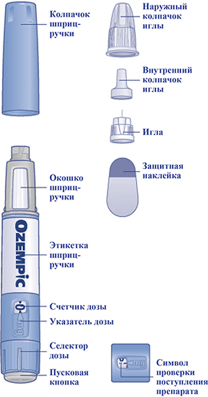 1. Подготовка шприц-ручки с новой иглой к использованию
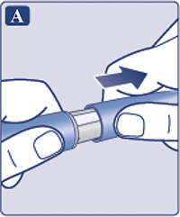
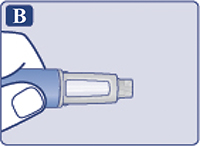
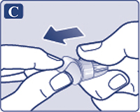
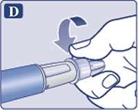
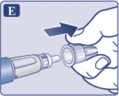
На конце иглы может появиться капля раствора. Это нормальное явление, однако Вы все равно должны проверить поступление препарата, если Вы используете новую шприц-ручку в первый раз. Не присоединяйте новую иглу до тех пор, пока Вы не будете готовы сделать инъекцию. 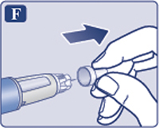 Δ Всегда для каждой инъекции используйте новую иглу. Это может предотвратить закупорку игл, загрязнение, инфицирование и введение неправильной дозы препарата. Δ Никогда не используйте иглу, если она погнута или повреждена. 2. Проверка поступления препарата
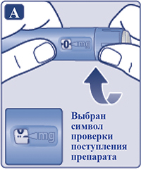
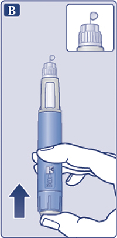 На конце иглы может оставаться маленькая капля, но она не будет введена при инъекции. Если капля раствора на конце иглы не появилась, повторите операцию "2" "Проверка поступления препарата", но не более 6 раз. Если капля раствора так и не появилась, поменяйте иглу и повторите операцию "2" "Проверка поступления препарата" еще раз. Если капля раствора так и не появилась, утилизируйте шприц-ручку и используйте новую. Δ Всегда перед использованием новой шприц-ручки в первый раз убедитесь в том, что на конце иглы появилась капля раствора. Это гарантирует поступление препарата. Если капля раствора не появилась, препарат не будет введен, даже если счетчик дозы будет двигаться. Это может указывать на то, что игла закупорена или повреждена. Если Вы не проверите поступление препарата перед первой инъекцией с помощью каждой новой шприц-ручки, Вы можете не ввести необходимую дозу и ожидаемый эффект препарата Оземпик® не будет достигнут. 3. Установка дозы
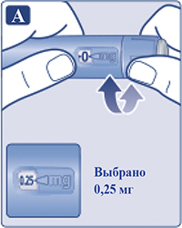 Селектор дозы изменяет дозу. Только счетчик дозы и указатель дозы покажут количество мг препарата в выбранной Вами дозе. Вы можете выбрать до 0.5 мг препарата на дозу. Если в шприц-ручке содержится менее 0.5 мг, счетчик дозы остановится прежде, чем появится "0.5". При каждом повороте селектора дозы раздаются щелчки, звук щелчков зависит от того, в какую сторону вращается селектор дозы: вперед, назад или, если набранная доза превышает количество мг препарата, оставшихся в шприц-ручке. Не считайте щелчки шприц-ручки. Δ Всегда перед каждой инъекцией проверяйте, какое количество мг препарата Вы набрали по счетчику дозы и указателю дозы. Не считайте щелчки шприц-ручки. С помощью селектора дозы нужно выбирать только дозы 0.25 мг или 0.5 мг. Выбранная доза должна находиться точно напротив указателя дозы - такое положение гарантирует, что Вы получите правильную дозу препарата. Сколько препарата осталось Чтобы определить, сколько препарата осталось, используйте счетчик дозы (рис. А): поворачивайте селектор дозы до остановки счетчика дозы. Если он показывает "0.5", в шприц-ручке осталось не менее 0.5 мг препарата. Если счетчик дозы остановился до того, как появилось "0.5", то это означает, что в шприц-ручке осталось недостаточное количество препарата, чтобы ввести полную дозу 0.5 мг. 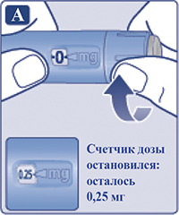 Δ Если в шприц-ручке осталось недостаточное количество препарата для введения полной дозы, не используйте шприц-ручку. Используйте новую шприц-ручку Оземпик®. 4. Введение препарата
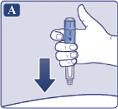
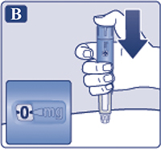
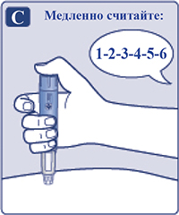
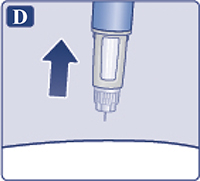 После завершения инъекции Вы можете увидеть каплю раствора на конце иглы. Это нормально и не влияет на дозу препарата, которую Вы ввели. Δ Всегда сверяйтесь с показаниями счетчика дозы, чтобы знать, какое количество мг препарата Вы ввели. Удерживайте пусковую кнопку до тех пор, пока счетчик дозы не покажет "0". Как выявить закупорку или повреждение иглы
Что делать с закупоренной иглой Замените иглу как описано в операции 5 "После завершения инъекции" и повторите все шаги, начиная с операции 1 "Подготовка шприц-ручки с новой иглой к использованию". Убедитесь, что установили полную необходимую Вам дозу. Никогда не дотрагивайтесь до счетчика дозы во время введения препарата. Это может прервать инъекцию. 5. После завершения инъекции
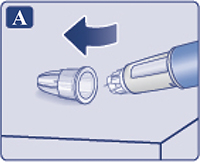
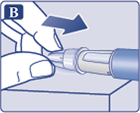
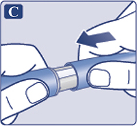 Всегда после каждой инъекции выбрасывайте иглу, чтобы обеспечить комфортную инъекцию и избежать закупорки игл. Если игла закупорена, Вы не введете себе препарат. Выбрасывайте пустую шприц-ручку с отсоединенной иглой в соответствии с рекомендациями данными врачом, медсестрой, фармацевтом или в соответствии с местными требованиями. Δ Никогда не пытайтесь надеть внутренний колпачок обратно на иглу. Вы можете уколоться. Δ После каждой инъекции всегда сразу удаляйте иглу со шприц-ручки. Это может предотвратить закупорку игл, загрязнение, инфицирование, вытекание раствора и введение неправильной дозы препарата. Δ Дополнительная важная информация:
Уход за шприц-ручкой Аккуратно обращайтесь со шприц-ручкой. Небрежное обращение или неправильное использование могут привести к введению неправильной дозы препарата, следствием чего могут стать высокая концентрация глюкозы крови или дискомфорт в области живота (тошнота или рвота).
Инструкция для пациентов по применению препарата Оземпик® 1 мг/доза раствор для п/к введения в предварительно заполненной шприц-ручке Внимательно прочитайте данную инструкцию перед применением предварительно заполненной шприц-ручки Оземпик®. Используйте шприц-ручку только после того, как Вы научитесь ею пользоваться под руководством врача или медсестры. Начните с проверки шприц-ручки, чтобы убедиться, что в ней содержится препарат Оземпик® 1 мг/доза, затем посмотрите на представленные ниже иллюстрации, чтобы ознакомиться с различными частями шприц-ручки и иглы. Если Вы слабовидящий или у Вас имеются серьезные проблемы со зрением, и Вы не можете различить цифры на счетчике дозы, не используйте шприц-ручку без посторонней помощи. Помочь вам может человек с хорошим зрением, обученный использованию предварительно заполненной шприц-ручки с препаратом Оземпик®. Данная шприц-ручка является предварительно заполненной шприц-ручкой. Она содержит 4 мг семаглутида и позволяет выбрать только дозу 1 мг. Шприц-ручка разработана для использования с одноразовыми иглами НовоФайн® длиной до 8 мм. Иглы НовоФайн® Плюс включены в упаковку. Δ Важная информация Обратите особое внимание на информацию, отмеченную такими значками, это очень важно для безопасного использования шприц-ручки. Предварительно заполненная шприц-ручка с препаратом Оземпик® и игла (пример) 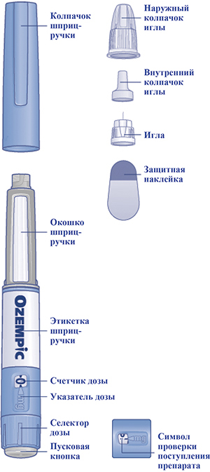 1. Подготовка шприц-ручки с новой иглой к использованию
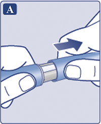
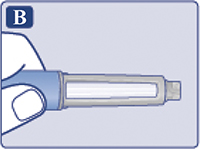
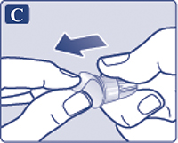
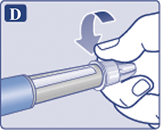
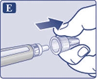
На конце иглы может появиться капля раствора. Это нормальное явление, однако, Вы все равно должны проверить поступление препарата, если Вы используете новую шприц-ручку в первый раз. Не присоединяйте новую иглу до тех пор, пока Вы не будете готовы сделать инъекцию. 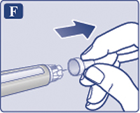 Δ Всегда для каждой инъекции используйте новую иглу. Это может предотвратить закупорку игл, загрязнение, инфицирование и введение неправильной дозы препарата. Δ Никогда не используйте иглу, если она погнута или повреждена. 2. Проверка поступления препарата
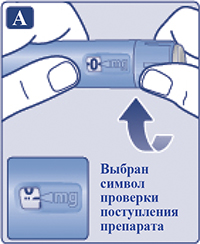
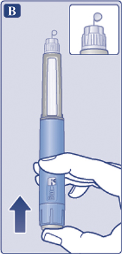 На конце иглы может оставаться маленькая капля, но она не будет введена при инъекции. Если капля раствора на конце иглы не появилась, повторите операцию "2" "Проверка поступления препарата", но не более 6 раз. Если капля раствора так и не появилась, поменяйте иглу и повторите операцию "2" "Проверка поступления препарата" еще раз. Если капля раствора так и не появилась, утилизируйте шприц-ручку и используйте новую. Δ Всегда перед использованием новой шприц-ручки в первый раз убедитесь в том, что на конце иглы появилась капля раствора. Это гарантирует поступление препарата. Если капля раствора не появилась, препарат не будет введен, даже если счетчик дозы будет двигаться. Это может указывать на то, что игла закупорена или повреждена. Если Вы не проверите поступление препарата перед первой инъекцией с помощью каждой новой шприц-ручки, Вы можете не ввести необходимую дозу и ожидаемый эффект препарата Оземпик® не будет достигнут. 3. Установка дозы
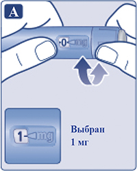 Только счетчик дозы и указатель дозы покажут, что был выбран 1 мг. Вы можете выбрать только 1 мг препарата на дозу. Если в шприц-ручке содержится менее 1 мг, счетчик дозы остановится прежде, чем появится "1". При каждом повороте селектора дозы раздаются щелчки, звук щелчков зависит от того, в какую сторону вращается селектор дозы: вперед, назад или, если Вы пытаетесь набрать дозу больше 1 мг. Не считайте щелчки шприц-ручки. Δ Всегда перед каждой инъекцией по счетчику дозы и указателю дозы проверяйте, что был набран 1 мг. Не считайте щелчки шприц-ручки. С помощью селектора дозы нужно выбирать только дозу 1 мг. Доза 1 мг должна находиться точно напротив указателя дозы - такое положение гарантирует, что Вы получите правильную дозу препарата. Сколько препарата осталось Чтобы определить, сколько препарата осталось, используйте счетчик дозы (рис. А): поворачивайте селектор дозы до остановки счетчика дозы. Если он показывает "1", в шприц-ручке осталось не менее 1 мг препарата. Если счетчик дозы остановился до того, как появилась цифра "1", то это означает, что в шприц-ручке осталось недостаточное количество препарата, чтобы ввести полную дозу 1 мг. 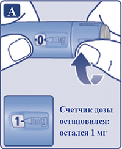 Δ Если в шприц-ручке осталось недостаточное количество препарата для введения полной дозы, не используйте шприц-ручку. Используйте новую шприц-ручку Оземпик®. 4. Введение препарата
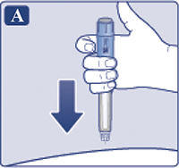
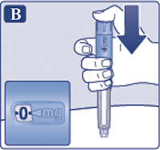
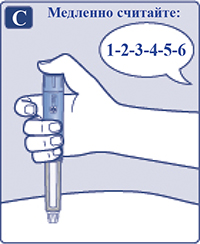
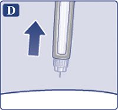 После завершения инъекции Вы можете увидеть каплю раствора на конце иглы. Это нормально и не влияет на дозу препарата, которую Вы ввели. Δ Всегда сверяйтесь с показаниями счетчика дозы, чтобы знать, какое количество мг препарата Вы ввели. Удерживайте пусковую кнопку до тех пор, пока счетчик дозы не покажет "0". Как выявить закупорку или повреждение иглы
Что делать с закупоренной иглой Замените иглу как описано в операции 5 "После завершения инъекции" и повторите все шаги, начиная с операции 1 "Подготовка шприц-ручки с новой иглой к использованию". Убедитесь, что установили полную необходимую Вам дозу. Никогда не дотрагивайтесь до счетчика дозы во время введения препарата. Это может прервать инъекцию. 5. После завершения инъекции
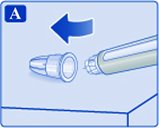
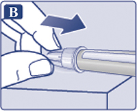
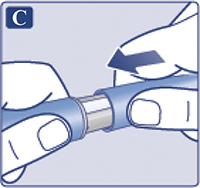 Всегда после каждой инъекции выбрасывайте иглу, чтобы обеспечить комфортную инъекцию и избежать закупорки игл. Если игла закупорена, Вы не введете себе препарат. Выбрасывайте пустую шприц-ручку с отсоединенной иглой в соответствии с рекомендациями данными врачом, медсестрой, фармацевтом или в соответствии с местными требованиями. Δ Никогда не пытайтесь надеть внутренний колпачок обратно на иглу. Вы можете уколоться. Δ После каждой инъекции всегда сразу удаляйте иглу со шприц-ручки. Это может предотвратить закупорку игл, загрязнение, инфицирование, вытекание раствора и введение неправильной дозы препарата. Δ Дополнительная важная информация:
Уход за шприц-ручкой Аккуратно обращайтесь со шприц-ручкой. Небрежное обращение или неправильное использование могут привести к введению неправильной дозы препарата, следствием чего могут стать высокая концентрация глюкозы крови или дискомфорт в области живота (тошнота или рвота).
Побочное действие
Наиболее часто регистрируемыми нежелательными реакциями (HP) во время клинических исследований являлись нарушения со стороны ЖКТ, включая тошноту, диарею и рвоту. В целом, данные реакции были легкой или средней степени тяжести и краткосрочными. HP распределены по системно-органным классам в соответствии с MedDRA с указанием частоты их возникновения согласно рекомендациям ВОЗ: очень часто (≥1/10); часто (≥1/100 до <1/10); нечасто (≥1/1000 до <1/100); редко (≥1/10000 до <1/1000) и очень редко (<1/10000). В каждой группе частоты развития HP представлены по снижению степени серьезности. Таблица 1. HP, выявленные при проведении клинических исследований 3a фазы
a Гипогликемия, определенная как тяжелая (требующая помощи другого человека) или симптоматическая в сочетании с концентрацией глюкозы в плазме крови <3.1 ммоль/л. b Осложнения диабетической ретинопатии - это сочетание из: необходимости в фотокоагуляции сетчатки глаза, необходимости в интравитреальном введении препаратов, кровоизлияния в стекловидное тело, развития слепоты, связанной с СД. Частота основана на исследовании сердечно-сосудистых исходов. c Групповой термин, включающий также нежелательные реакции, связанные с гиперчувствительностью, такие как сыпь и крапивница. d НР из постмаркетинговых источников Двухлетнее исследование сердечно-сосудистых исходов и безопасности В популяции пациентов с высоким риском развития сердечно-сосудистых заболеваний профиль HP был аналогичным таковому в других клинических исследованиях 3а фазы (описаны в подразделе "Клиническая эффективность и безопасность"). Описание отдельных HP Гипогликемия Во время монотерапии препаратом Оземпик® не наблюдалось эпизодов тяжелой гипогликемии. Гипогликемия тяжелой степени, в основном, наблюдалась при применении препарата Оземпик® в комбинации с производным сульфонилмочевины или инсулином. Наблюдалось несколько эпизодов тяжелой гипогликемии при применении препарата Оземпик® в комбинации с другими, за исключением производного сульфонилмочевины, пероральными гипогликемическими препаратами. Гипогликемия по классификации Американской диабетической ассоциации наблюдалась у 11.3% (0.3 случая/пациенто-год) пациентов при добавлении семаглутида в дозе 1.0 мг к терапии ингибитором SGLT2 по сравнению с 2.0% (0.04 случая/пациенто-год) пациентов, получавших плацебо. О тяжелой гипогликемии сообщалось у 0.7% (0.01 события/пациенто-год) и 0% пациентов соответственно. HP со стороны ЖКТ Во время терапии препаратом Оземпик® в дозах 0.5 мг и 1 мг у пациентов отмечалась тошнота, диарея и рвота. Большинство реакций были от легкой до средней степени тяжести и краткосрочными. HP стали причиной преждевременного выбывания из клинических исследований 3.9% и 5.9% пациентов соответственно. Чаще всего о HP сообщалось в первые месяцы терапии. Пациенты с низкой массой тела при лечении семаглутидом могут испытывать больше НР со стороны ЖКТ. В клинических исследованиях при одновременном применении ингибитора SGLT2 и семаглутида запор и гастроэзофагеальная рефлюксная болезнь наблюдались у 6.7% и 4% пациентов, получавших семаглутид 1.0 мг, соответственно, по сравнению с отсутствием событий у пациентов, получавших плацебо. Распространенность этих событий со временем не уменьшалась. Острый панкреатит Частота развития острого панкреатита, подтвержденного по результатам экспертной оценки, в исследованиях 3а фазы составила 0.3% при применении семаглутида и 0.2% при применении препарата сравнения. В двухлетнем исследовании сердечно-сосудистых исходов частота развития острого панкреатита, подтвержденная по результатам экспертной оценки, составила 0.5% при применении семаглутида и 0.6% при применении плацебо (см. раздел "Особые указания"). Осложнения диабетической ретинопатии В двухлетнем клиническом исследовании, в котором участвовали пациенты с СД2 и высоким сердечно-сосудистым риском, длительным течением СД и неадекватным контролем гликемии, подтвержденные случаи осложнений диабетической ретинопатии развивались у большего количества пациентов, получавших препарат Оземпик® (3.0%), по сравнению с пациентами, получавшими плацебо (1.8%). У пациентов с анамнезом диабетической ретинопатии в начале клинического исследования возрастание абсолютного риска развития осложнений было выше. У пациентов с отсутствием подтвержденного анамнеза диабетической ретинопатии количество событий было одинаковым при применении препарата Оземпик® и плацебо. В клиническом исследовании продолжительностью до 1 года частота HP, связанных с диабетической ретинопатией, была одинаковой в группе препарата Оземпик® и препаратов сравнения. Прекращение лечения по причине HP Частота прекращения лечения по причине HP составила 8.7% для пациентов, получавших препарат Оземпик® 1 мг. Наиболее частыми HP, приводившими к прекращению лечения, были нарушения со стороны ЖКТ. Реакции в месте введения Сообщалось о реакциях в месте введения (таких как, сыпь в месте введения, покраснение) у 0.6% и 0.5% пациентов, получавших семаглутид 0.5 мг и 1 мг, соответственно. Эти реакции носили, как правило, легкий характер. Иммуногенность Вследствие потенциальных иммуногенных свойств белковых и пептидных лекарственных препаратов, у пациентов могут появиться антитела к семаглутиду после терапии препаратом Оземпик®. В конце клинического исследования доля пациентов, у которых были обнаружены антитела к семаглутиду в любой момент времени, была низкой (1-2%) и ни у одного пациента не было обнаружено нейтрализующих антител к семаглутиду или антител с нейтрализующим эндогенный ГПП-1 эффектом. Противопоказания
Противопоказано применение препарата Оземпик® у следующих групп пациентов и при следующих состояниях/заболеваниях в связи с отсутствием данных по эффективности и безопасности иди ограниченным опытом применения:
С осторожностью Препарат Оземпик® рекомендуется применять с осторожностью у пациентов с почечной недостаточностью и у пациентов с наличием панкреатита в анамнезе (см. раздел "Особые указания"). Применение при беременности и кормлении грудью
Беременность Исследования на животных продемонстрировали репродуктивную токсичность препарата (см. раздел "Доклинические данные по безопасности"). Данные по применению семаглутида у беременных женщин ограничены. Противопоказано применять семаглутид во время беременности. Женщинам с сохраненным репродуктивным потенциалом рекомендуется использовать контрацепцию во время терапии семаглутидом. Если пациентка готовится к беременности, либо беременность уже наступила, терапию семаглутидом необходимо прекратить. Из-за длительного Т1/2 терапию семаглутидом необходимо прекратить как минимум за 2 месяца до планируемого наступления беременности (см. раздел "Фармакокинетика"). Период грудного вскармливания У лактирующих крыс семаглутид проникал в молоко. Нельзя исключить риск для ребенка, находящегося на грудном вскармливании. Противопоказано применять семаглутид в период грудного вскармливания. Фертильность Действие семаглутида на фертильность у людей неизвестно. Семаглутид не влиял на фертильность самцов крыс. Среди самок крыс увеличение эстрального цикла и незначительное снижение количества овуляций наблюдалось при дозах, сопровождавшихся снижением массы тела самки. Особые указания
Применение препарата Оземпик® противопоказано у пациентов с СД1 или для лечения диабетического кетоацидоза. Препарат Оземпик® не заменяет инсулин. Диабетический кетоацидоз был зарегистрирован у инсулинзависимых пациентов, у которых отмечалось быстрое прекращение лечения или снижение дозы инсулина при начале лечения агонистом ГПП-1Р (см. раздел "Режим дозирования"). Реакции со стороны ЖКТ Применение агонистов ГПП-1Р может быть ассоциировано с HP со стороны ЖКТ. Это следует учитывать при лечении пациентов с почечной недостаточностью, т.к. тошнота, рвота и диарея могут привести к дегидратации и ухудшению функции почек. Острый панкреатит При применении агонистов ГПП-1Р наблюдались случаи развития острого панкреатита. Пациенты должны быть проинформированы о характерных симптомах острого панкреатита. При подозрении на панкреатит терапия препаратом Оземпик® должна быть прекращена; в случае подтверждения острого панкреатита терапию препаратом Оземпик® возобновлять не следует. Следует соблюдать осторожность у пациентов с панкреатитом в анамнезе. При отсутствии других признаков и симптомов острого панкреатита повышение активности ферментов поджелудочной железы не является прогностическим фактором развития острого панкреатита. Гипогликемия Пациенты, получающие препарат Оземпик® в комбинации с производным сульфонилмочевины или инсулином, могут иметь повышенный риск развития гипогликемии. В начале лечения препаратом Оземпик® риск развития гипогликемии можно снизить, уменьшив дозу производного сульфонилмочевины или инсулина. Диабетическая ретинопатия Наблюдалось повышение риска развития осложнений диабетической ретинопатии у пациентов с наличием диабетической ретинопатии, получающих терапию инсулином и семаглутидом (см. раздел "Побочное действие"). Следует соблюдать осторожность при применении семаглутида у пациентов с диабетической ретинопатией, получающих инсулинотерапию. Такие пациенты должны находиться под постоянным наблюдением и получать лечение в соответствии с клиническими рекомендациями. Быстрое улучшение гликемического контроля было ассоциировано с временным ухудшением состояния диабетической ретинопатии, однако при этом нельзя исключать и другие причины. Сердечная недостаточность Отсутствует опыт применения препарата Оземпик® у пациентов с хронической сердечной недостаточностью IV функционального класса в соответствии с классификацией NYHA. Применение препарата у таких пациентов противопоказано. Заболевания щитовидной железы В пострегистрационном периоде применения другого аналога ГПП-1, лираглутида, были отмечены случаи медуллярного рака щитовидной железы (МРЩЖ). Имеющихся данных недостаточно для установления или исключения причинно-следственной связи возникновения МРЩЖ с применением аналогов ГПП-1. Необходимо проинформировать пациента о риске МРЩЖ и о симптомах опухоли щитовидной железы (появления уплотнения в области шеи, дисфагии, одышки, непроходящей охриплости голоса). Значительное повышение концентрации кальцитонина в плазме крови может указывать на МРЩЖ (у пациентов с МРЩЖ значения концентрации кальцитонина в плазме крови обычно >50 нг/л). При выявлении повышения концентрации кальцитонина в плазме крови следует провести дальнейшее обследование пациента. Пациенты с узлами в щитовидной железе, выявленными при медицинском осмотре или при проведении УЗИ щитовидной железы, также должны быть дополнительно обследованы. Применение семаглутида у пациентов с личным или семейным анамнезом МРЩЖ или с синдромом МЭН типа 2 противопоказано. Доклинические данные по безопасности Доклинические данные, основанные на исследованиях фармакологической безопасности, токсичности повторных доз и генотоксичности, не выявили какой-либо опасности для человека. В двухлетних исследованиях канцерогенности у крыс и мышей при клинически значимых концентрациях семаглутид стал причиной развития опухолей С-клеток щитовидной железы без смертельного исхода. Опухоли С-клеток щитовидной железы без смертельного исхода, наблюдаемые у крыс, характерны для группы аналогов ГПП-1. Считается, что в отношении людей данный риск является низким, но не может быть полностью исключен. Влияние на способность к управлению транспортными средствами и механизмами Препарат Оземпик® не влияет или незначительно влияет на способность управлять транспортными средствами или работу с механизмами. Пациенты должны быть предупреждены о том, что им следует соблюдать меры предосторожности во избежание развития у них гипогликемии во время управления транспортными средствами и при работе с механизмами, особенно при применении препарата Оземпик® в комбинации с производным сульфонилмочевины или инсулином. Передозировка
Симптомы: в ходе клинических исследований сообщалось о передозировках до 4 мг в однократной дозе и до 4 мг в неделю. Наиболее частой HP, о которой сообщалось, была тошнота. Все пациенты выздоровели без осложнений. Лечение: специфического антидота при передозировке препарата Оземпик® не существует. В случае передозировки рекомендуется проведение соответствующей симптоматической терапии. Учитывая длительный Т1/2 препарата (примерно 1 неделя), может потребоваться продолжительный период наблюдения и лечения симптомов передозировки. Лекарственное взаимодействие
Исследования семаглутида in vitro показали очень небольшую вероятность ингибирования или индукции ферментов системы цитохрома Р450 (CYP) и ингибирования транспортеров лекарственных препаратов. Задержка опорожнения желудка при применении семаглутида может оказывать влияние на всасывание сопутствующих пероральных лекарственных препаратов. Семаглутид следует применять с осторожностью у пациентов, получающих пероральные лекарственные препараты, для которых необходима быстрая абсорбция в ЖКТ. Парацетамол При оценке фармакокинетики парацетамола во время теста стандартизированного приема пищи было выявлено, что семаглутид задерживает опорожнение желудка. При одновременном применении семаглутида в дозе 1 мг AUC0-60 мин и Cmax парацетамола снизились на 27% и 23%, соответственно. Общая экспозиция парацетамола (AUC0-5 ч) при этом не изменялась. При одновременном приеме семаглутида и парацетамола коррекция дозы последнего не требуется. Пероральные гормональные контрацептивные средства Не предполагается, что семаглутид снижает эффективность пероральных гормональных контрацептивных средств. При одновременном применении комбинированного перорального гормонального контрацептивного препарата (0.03 мг этинилэстрадиола/0.15 мг левоноргестрела) и семаглутида последний не оказывал клинически значимого влияния на общую экспозицию этинилэстрадиола и левоноргестрела. Экспозиция этинилэстрадиола не была затронута; наблюдалось увеличение на 20% экспозиции левоноргестрела в равновесном состоянии. Cmax не изменилась ни для одного из компонентов. Аторвастатин Семаглутид не изменял системную экспозицию аторвастатина после применения однократной дозы аторвастатина (40 мг). Cmax аторвастатина снизилась на 38%. Это изменение было расценено как клинически незначимое. Дигоксин Семаглутид не изменял системную экспозицию или Cmax дигоксина после применения однократной дозы дигоксина (0.5 мг). Метформин Семаглутид не изменял системную экспозицию или Cmax метформина после применения метформина в дозе 500 мг 2 раза/сут в течение 3.5 дней. Варфарин Семаглутид не изменял системную экспозицию или Cmax R- и S-изомеров варфарина после применения однократной дозы варфарина (25 мг). На основании определения МНО клинически значимых изменений фармакодинамических эффектов варфарина также не наблюдалось. Несовместимость Вещества, добавленные к препарату Оземпик®, могут вызвать деградацию семаглутида. Оземпик® нельзя смешивать с другими лекарственными средствами, в т.ч. с инфузионными растворами. Условия хранения и сроки годности
Препарат следует хранить в недоступном для детей месте при температуре от 2°С до 8°С (в холодильнике), но не рядом с морозильной камерой; защищать от света; не замораживать. Предохранять от воздействия избыточного тепла и света. Срок годности - 3 года. Не применять по истечении срока, указанного на этикетке шприц-ручки и упаковке. Используемую или переносимую в качестве запасной шприц-ручку с препаратом хранить при температуре не выше 30°С или при температуре от 2°С до 8°С (в холодильнике) в течение 6 недель. Не замораживать. После использования закрывать шприц-ручку колпачком для защиты от света. |
||||||||||||||||||||||||||||||||||||||||||||||||||||||||||||||||||||||||||||||
Вернуться наверх |
||||||||||||||||||||||||||||||||||||||||||||||||||||||||||||||||||||||||||||||
Copyright © Справочник Видаль «Лекарственные препараты в России», Москва, Россия